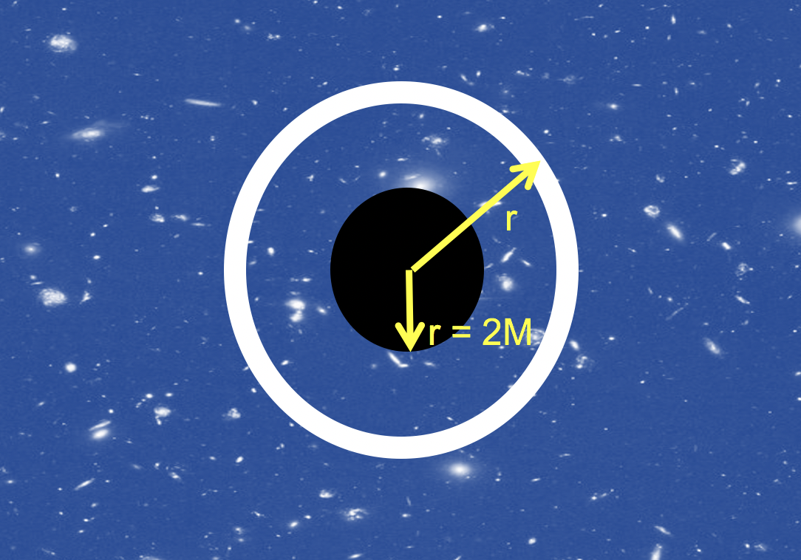

Forrige side🙂 🙁3 observatørerPADLET

La oss se det hele fra langt-vekkobservatørens perspektiv. Langt-vekkobservatøren har Lorentzgeometri og kan dermed bruke Euclidsk geometri på flate plan når han kun ser på rommet og ikke på tiden. For langt-vekkobservatøren vil den vanlige regelen om at omkretsen av en sirkel er 2πr være gyldig. For denne observatøren vil dermed avstanden r fra sentrum til skallet som han kan måle i teleskopet sitt være like stor som omkretsen som han også kan måle i teleskopet delt på 2π. Når uttrykket for Δs faller ut av Einsteinlikningen så har koordinatet r nettopp blitt definert på denne måten: det er avstanden r som en langt-vekkobservatør måler fra sentrum av det sorte hullet.